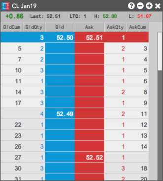

The Depth widget supports viewing detailed or aggregate depth for a single instrument. When displaying detailed depth, the widget also shows counterparty information for exchanges that provide this data on their price feed (e.g., B3).
{% include detailed-depth.html %}

You can open the Depth widget in the following ways:
- Click Widgets | Market Views from the workspace menu bar and use the Search box or Market Explorer in the open widget to add an instrument.
- Select the Depth widget icon from the instrument search results or Market Explorer using the workspace menu bar.
- Right-click an instrument row in Market Grid to open Depth as a stand-alone or linked widget using the context menu.